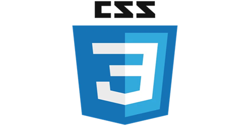
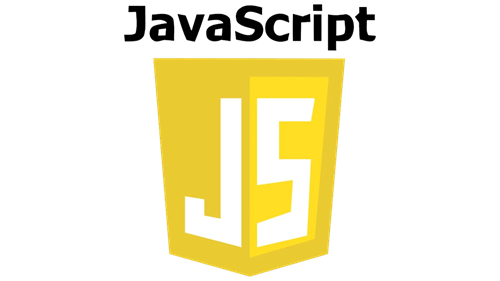

【入門】HTML/CSS/JavaScriptの学習におすすめの書籍
最近ついに、前から憧れていた「自分のブログ」を公開できた。
HTMLもCSSもJavaScriptも初心者で、コードを見るだけで頭がこんがらがるタイプ。
でも「自分でゼロから作ってみたい」という気持ちだけは強くて、試行錯誤しながらなんとか形にした。
この記事では、学ぶうえで助けられた書籍をまとめて紹介していく。
Web制作を始めたばかりの人に、少しでもヒントになれば嬉しい。

HTMLとは
HTMLは、ウェブページの骨組みをつくるための言語。
文章の見出し・段落・画像・リンクなど、ページにどんな内容を配置するかをブラウザに伝える役割を持っている。
デザインはCSS、動きはJavaScriptが担当するので、HTMLはまず「ページの構造を決めるもの」と覚えると分かりやすい。
CSSとは

CSSは、HTMLで作った骨組みに“見た目”をつけるための言語。
文字の色や大きさ、レイアウト、背景、余白、ボタンの形まで、見た目に関することはほぼ全部CSSが担当してる。
CSSを使うことで、ウェブページのデザインを柔軟に調整し、一貫したスタイリングを複数のページにわたって簡単に適用することが可能。
JavaScriptとは

JavaScript（ジャバスクリプト）は、ウェブページに“動き”や“反応”をつけるための言語。
ボタンを押したらメニューが開いたり、入力内容をチェックしたり、スクロールに合わせてアニメーションしたり…そういう「ちょっと動く部分」はだいたいJavaScriptがやってる。
HTMLがページの「骨組み」、CSSが「見た目」を担当するのに対して、JavaScriptはページに「動作」や「機能」を与える役割を持つ、ウェブの基本的な技術の一つ。
HTML/CSS/JavaScriptの学習におすすめの書籍
まとめ
今回は、ブログ立ち上げに使用した書籍を紹介した。
次は、GitとGithubの違いをまとめていこうと思う。